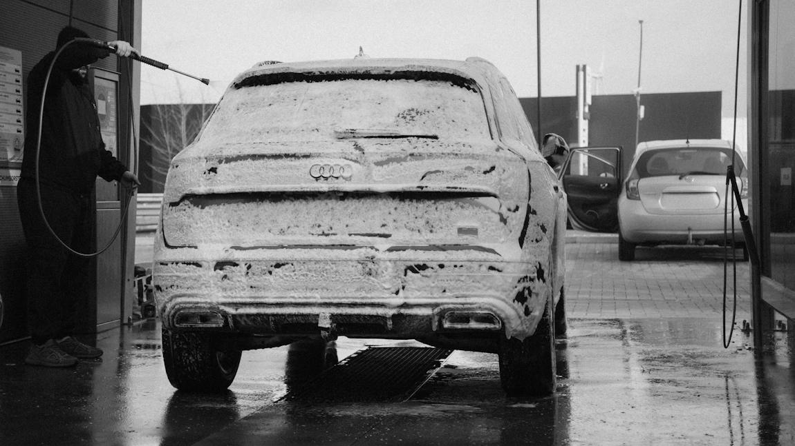
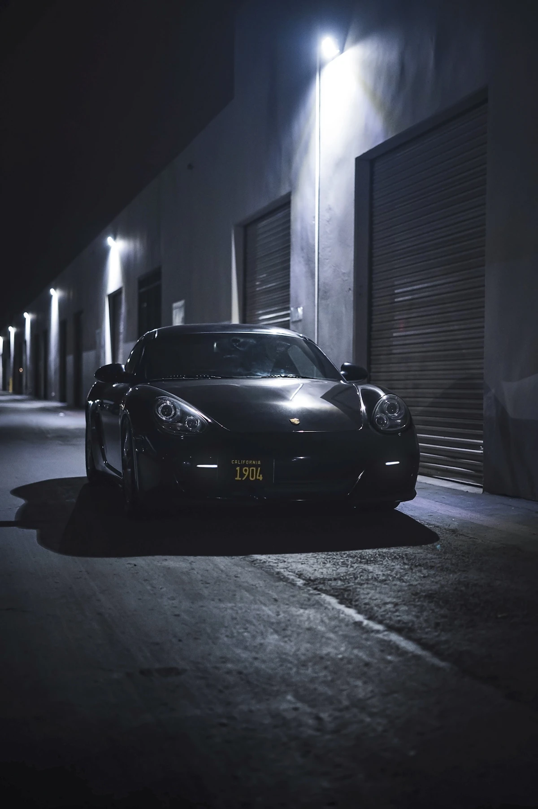
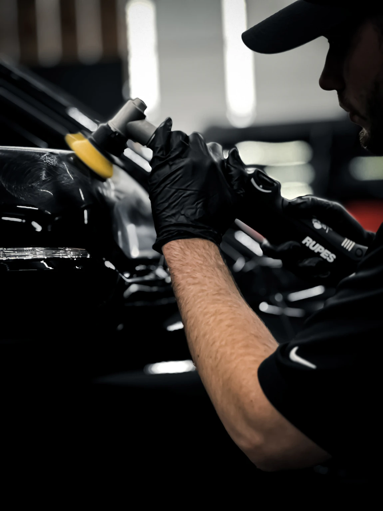

≈ 90 мин
Детейлинг-мойка
Бережная очистка кузова, дисков и труднодоступных деталей.
Стоимость уточняется

Профессиональный уход за автомобилем в Тюмени

Бережная очистка кузова, дисков и труднодоступных деталей.

Глубокая очистка обивки, ковров и потолка.

Коррекция мелких рисок и восстановление глубины блеска.
Иллюстративная подборка фотографий автомобилей и ухода за ними.
Обсуждаем задачу и состояние поверхностей.
Согласуем состав работ, стоимость и длительность.
Последовательно работаем с выбранными зонами.
Осматриваем результат вместе с вами.
Личное деморасписание в этом браузере · время Тюмени
Стоимость уточняется у администратора. При обращении укажите модель автомобиля и нужную услугу.
В каталоге указана ориентировочная длительность для тестового расписания. Реальное время зависит от состояния автомобиля и объёма работ.
Откройте «Моя демозапись» в блоке онлайн-записи. В этом браузере ключ сохраняется автоматически. Демозаписи хранятся только в этом браузере.
Для настоящей записи воспользуйтесь контактом в Telegram. Действия в демоверсии сохраняются только в тестовом расписании.